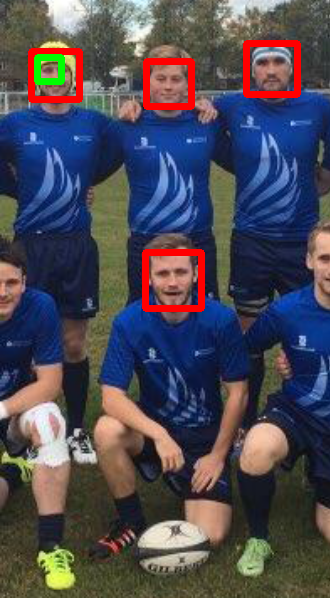
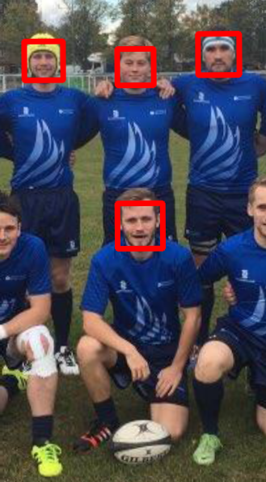

Face Detection
- Python version: 3.6.8
- Dlib version: 19.8.1
- This project has two scripts:
- to detect screen image with single face in the image
- to detect faces and eyes in the image
- I have used opencv and haarcascade, to detect faces.
- The cascade file has a function called detectMultiScale, in which I used the two parameters- Scale factor and minNeighbours.
- On tweaking these, the efficiency of the cascade to detect faces can be adjusted.
-
I worked with three cascades:-
- face_cascade
- face_cascade2
- profileface_cascade
- I found the face_cascade2 the most accurate.
- The cascade are most sensitive in grayscale than in color scale.(image = "team4.png")
- The output is colored, but the image used for processing gray or colored.
- Link to Github: Face_Detection
| with gray scale(roi_gray) | with color scale(roi_color) |
|---|---|
|  |  |